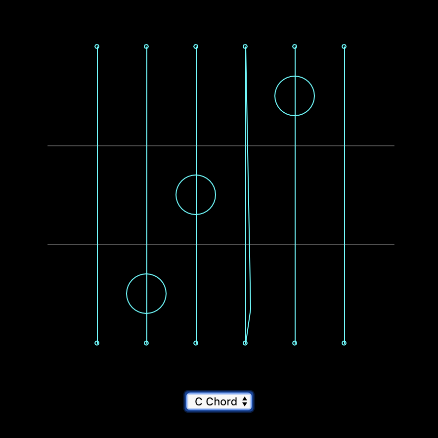
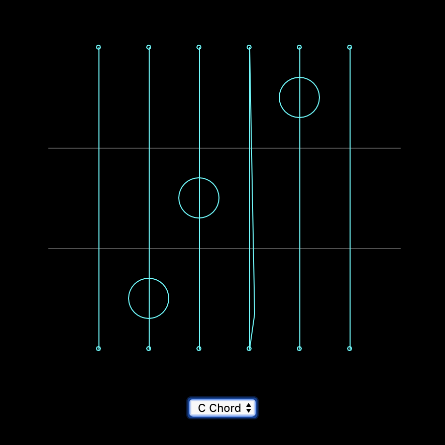
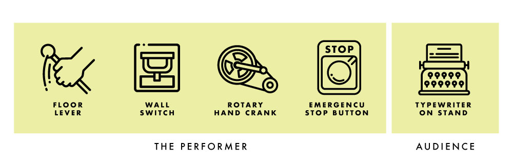

Timber - Lines 2.0
For this project, I wanted to continue working on my prevous
Week 7 - 20 - 60'' composition
After I updated my Mac, nothing's working... I tried to reinstalled the Soundflower but it still didn't work.
But I think the shape of the envolope is also intriguing.
Week 6 - Melody: Design and Code / Pcomp - Coin Piano
Design

Inspired by my sketch last week--the melody sketch of the song 'Haru-yo, Koi'--I started with playing around the tutorial by changing the values of the octave, bars, beats and etc.
And I came up with this:
Also, I have a version with guitar chords (I wish I could've recorded my own samples since I couldn't find better ones, but I lent my guitar to my younger brother...) >> SKETCH
And then I want to move forward to the real thing from scratch, but after this line of code, my p5 stopped working (only for that very bottom line of code):

So, instead, I move on to a similar idea...
Lines that play sound: and here's the real thing A.k.a the code
I simplified my previous code (which is already pretty simple...) and which it reminds me of a guitar... so I think why not a p5 Guitar... 
Concluding and Reflection
Compare to my last assignment, which was more playful and less informative, I figure that I'm having for fun when the pattern is obvious for melody. For each chord, I try to show the position of the fingers. I take this as a warmup for my original idea, since it is now only playing notes instead of a continuous melody. A major thing that's also missing now is the fingerpicking. The next step will definitly be having a play button that toggles a demonstration or a select DOM that you can choose which of the fingerpicking you want to play.
Week 5 - Melody Sketch, Interact and Code
interface Sketch for Haru-yo, koi
This is an old song that was used in a Japanese drama with a scene of falling cherry blossom that the music fits the speed of the falling flower.I do not want to be effect by the visual elements too much, so I listen to it again without any visual interruption, noticing that the opening notes are very recognizable individually. It make me feels like it is glass balls that's tied to strings hanging somewhere and it will ring if someone touches it (I know it physically cannot happen just by tocuhing it, but). The Oblique Strategy I got is "decorate, decorate", so I might want to develope this into something space-like. Maybe turning the hanging glasses into stars? So that it make more sense for it to be floating.
Interact with Kandinsky and Baseline
KandinskyI've learned piano and a little bit of guitar when I was young, so I know some basic relationship of notes. When I was interacting with this interface, I first found interesting since as I mentioned before, I want to do something related to drawing and painting, however, when I started to find the relationship of the melody and the painted line, there isn't much. Only the position (the height) will affect the notes, but neither the lenght nor the postion of x-axis affect any of the melody. I also do not know why the thickness of a line involved in this when it doesn’t belong to any attributes to the melody played. It will be fun for people who didn't notice it. After noticing the magic behind it is only the position of the y-axis it seems less fun. Also, not that educational.
Baseline
This one is more educational--all elements are stated clearly--each notes, bars, the source of the sound. There’s also preset melody that allow the user to base off from something. I like how only the selected elements in the entire page is in vivid color so that after some reading of the text, it feels like it’s saying “here comes the fun part”.
Week 3 - Sketches, and Documentation on Drawing Beats
7 Sketches
In n class I discussed with my classmates on what sort of interface or way of interact that has not usually seen. And we came up with these three:
The very first one is when the hands are detected by the computer, and you are able to control one rhythm on each hand, so it allows you to simply understand cross-rhythm. The second one, thinking similarly, that the computer detect the human body, and turn each part of you body into the parts of an instrument, in this case the drum. We want to input and the output still be very physical and straight forward. In this interactivity, it also shows how the rhythms can be understood by our body. The third one is thinking about beats in real life, such as doing basketball, all kinds of sports and also the beat when we eat. In this interface, all different kinds of food in one category will be laid out (for example, only fruits / all sorts of chips / candies). So if we have fruits as our theme this time, every one who participated will be contributing one chewing sound, and each different kind of fruits will represent one track. (People who eats apple will all contribute one apple sound, and that will be the apple track.)


Here are some more thoughts that I had when I went back home, starting from top to bottom, left to right:
1. The Bubble Beat - where the size, position and state of the bubble decide the sound of beat. For example, the sound might be deep and slow if a bubble had just been blew and is big and near to the ground. When the bubble pops, it gives a slightly higher pitch and sharper beat.
2. Face as Instrument - as shown in the image, each part of the face will be attached to one sound, and when you move each part accordingly, it will create beats.
3. Drawing Beat - I always wanted to combine drawing and music within an interface. Different color each represent different sound of beats and the position our the mouse decide the bmp of the beats.
4. Balloons - This is also a web interface where when you press the mouse, the longer you press, the bigger the circle and faster the beat will be.
Drawing Beats
As I mentioned earlier, I always wanted to combine drawing and music into one interface. I want to connect colors, sizes and shapes to different attribute of music. I want to make beats to draw and to use the rythme music to create pattern in visuals.How it works:
1. Hihat - the background and 'd' on keyboard.2. Kick - 'a' on keyboard.
3. Synth - 's' on keyboard.
4. BPM - controlled by the slider, from slow to fast
5. Pause - button on the left bottom corner or space key
And I had this at first:
When you download the image
.png)
However, this is a little too much black, which make it hard to see the circles that represents the beats, so I changed the visual a little bit.
.png)
See the code here!

Week 2 - Analyze rhythm interfaces
I did four instead of two because I feel very uncertain on how to do this. I found myself constantly changing my standards as I moved on to the next interactive webpage. Below is a graph with my self understanding of each criteria:
Everthing will be high in "Distribution in Space" since they are all web-based interactive interfaces.
1.Neural Drum Machine
This is the first one that I interacted with. Personally, I like how simple and straight forward the interface is. The learning of this web was fast--only some simple clicking on the shapes, simple adjustment on each attributes, and clear looping animation. However, I do found the output is way too simple, which the only animation is sort of explanatory (showing you where the loop is going). You are only able to control one set of rhythm that goes in loop. I like the rhythm generated from this interface--it is clean, logical, easy to understand just like its interface, but lack of playfulness and diversity.
2.Rhythm Toy
I want to talk about this Rhythm Toy interface the next is because it also has a simple user controls, yet, lesser freedoms but higher output than the Neutral Drum Machine. The animation correspond with the beat you put in, which also provides a bit more diversity in timbral level (I'm not sure if it is corresponding with the diversity of instrument used), creates more fun than the previous one even though the music is still educational / a safe play.
3.Groove Pizza

The third one, I anaylsed is this Groove Pizza. I was attractived by the visual of this interface--very logically distributed (the pie graph like system, corresponding with the 7 coloum beat adjustor) at the same time very abstractive (how it has shapes on the left hand side--instead of creating music by the sound, but also how it can be visually related). Even though the visual output seemed very interesting, I didn't put it as a high output because the visuals were there already as an input, and nothing more that it produced that expected. Also, I feel the default setting of the tempo was a little fast. I found it difficult to use when was trying to adjust the beats while playing. I think it is always good to have a rather slower default, have the user get familliar with the system first and then they can adjust it themselfs.
4.Beat Blender

Last but not least, the Beat Blender. This is a very interesting interface than sort of hide the magic of music behind the four-color-gradient. Each corner has one loop of beat, and at the sections that the colors mixed together, the beat also sort of mixed--this compare to the rest of the interfaces is a more experimental project, specially from the music standards--when the user has been given more freedom. Eventhough I found it was pretty complicated when you try to adjust the beat of each corner (it gives a lot of default beat options), you don't need to adjust and you will still found intriguing beacuse of the "Drag / Draw" at the left bottom corner. It is definitly a very new way to combine loops together. it almost looks very random, but each loop are somehow related to each other because they are in 'gradient'.
Week 1 - Anxiety of Machination (Concept)
In a room of crowd, people stopped to see this—a transparent cube with a man inside, who is standing in the middle of running machines, trying to stop the noises that the machines create. Outside of the cube there’s typewriters; that connects to the AI system that has a voice liabrary of on each side of the cube facing towards the audience—The Anxiety Of Machination is an interactive installation piece and performance tool inspired by the track “Intro” by the experimental hiphop group clipping.
This piece aims to explore the relationship between human and machine; the anxiety produced by their interaction and the power dynamics between them.
Installation Overview
The installation features a small space, roughly 10’ by 10’ square in the center of the stage or a gallery space.

The space is delineated with glass walls and is filled with industrial machinery - gears, floor levers, steam pipes, etc. The participant enters and can freely play with the machinery, adjusting the levers, spinning gears, and so on. The different pieces of machinery control different elements of sound, some primarily through the physical vibrations created by the machine pieces rubbing or clanking, but others may trigger changes to audio being played by a computer-controlled speaker system. The participant can control the tempo, abrasiveness of the background instrumental, internal rhythm of the computer-generated hip-hop vocal part, and can also choose to trigger the breakdown/self-destruct sequence which will end the piece. However, aside from this self-destruct mechanism there is no way for the participant to actually calm or slow the musical tension being built; like a runaway train the participant’s choices are limited to various stylistic adjustments within the larger narrative arc of rising tension followed by (destructive) release. 